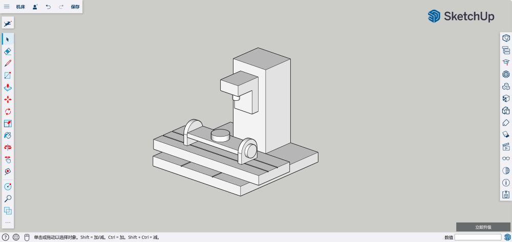
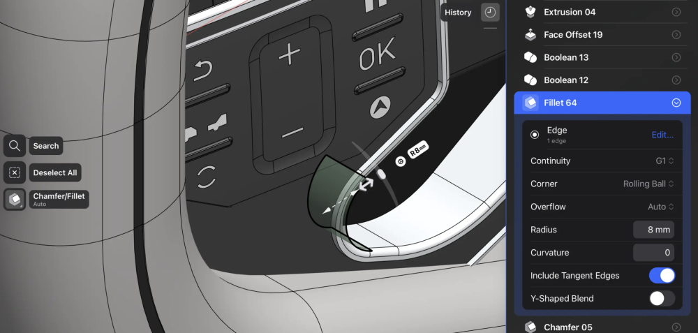
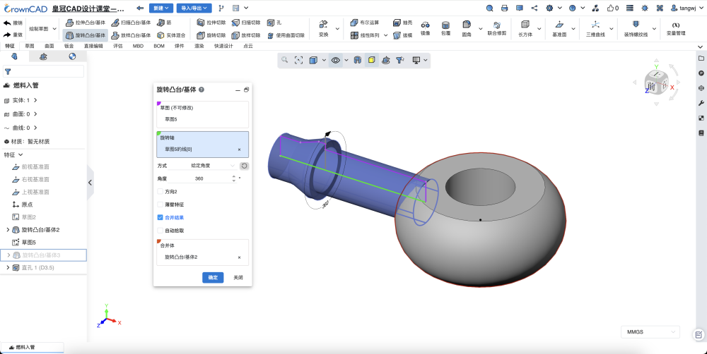

直接建模 vs 基于历史的参数化建模
三维建模软件调研笔记。
直接建模（Direct Modeling）
直接建模的最大优势就是所见即所得。
概念
直接建模是一种无需依赖于操作顺序和参数关系的三维建模方法，用户直接对几何体的点线面进行编辑和操作。
直接建模提供了更大的灵活性和直观性，使得对模型的编辑和修改更为简便快捷，更适合于快速概念验证、复杂形状编辑以及处理无历史数据的现有模型。
应用
SketchUp
SketchUp 又被称为草图大师，是建筑领域常用的概念设计软件，

Shapr3D
Shapr3D 最初是在 iPad 上使用的建模软件，所以在交互上设计得非常直观。
在 2024 年，Shapr3D 也推出了基于历史的参数化建模版本，并且保留了直接建模的交互方式。

- SolidWorks：是一款领先的 CAD 软件，提供了直接建模工具，允许用户在不依赖历史记录的情况下编辑模型。
- Autodesk Fusion 360：结合了参数化和直接建模的特点，提供了灵活的设计环境，适合产品开发和机械设计。
- Rhino
- CAXA实体设计（IRONCAD)
- Creo Direct
- Creo Elements
- KeyCreato
建模流程
- 绘制轮廓：使用线、圆、矩形等工具创建 2D 轮廓
- 创建 3D 模型：通过推、拉、布尔等操作创建 3D 模型
- 修改模型：直接编辑几何体
局限性
- 参数化控制不足：直接建模可能缺乏参数化建模中的精确尺寸和关系控制，导致设计迭代和修改时的不便。
- 历史记录缺失：直接编辑可能会导致设计意图的丢失，使得追踪变更和协作变得更加困难。
- 功能限制：某些高级功能，如复杂装配和详细工程图的生成，可能在直接建模环境中不如参数化建模环境完善。
基于历史的参数化建模（History-Based Parametric Modeling）
基于历史的参数化建模的最大优势就是可追溯。
概念
参数化建模是一种基于定义几何形状的参数和关系的三维建模方法，通过修改这些参数来控制和更新模型的结构和外观。
参数化建模能够通过调整参数快速进行设计迭代和保持设计的一致性，适用于需要精确控制设计变量和进行大量迭代的设计任务。
应用
支持参数化建模的软件有很多。
国内软件
- CrownCAD

- 中望 3D
国外软件
- CATIA：是 Dassault Systemes 开发的专业CAD软件，广泛应用于航空航天、汽车和工业设计领域，以其强大的参数化建模功能而知名。
- NX：由西门子PLM软件开发，是一款集成了多种设计和制造功能的高级CAD软件，支持基于历史的参数化建模。
- Creo Parametric：是PTC公司开发的一款CAD软件，继承了Pro/ENGINEER的特点，专注于基于历史的参数化设计。
- Solidworks
- Autodesk Inventor
- Fusion360
- Onshape
建模流程
大多数参数化建模软件的操作流程都包含以下几个主要步骤：
- 创建二维草图：在二维平面里绘制形状，创建模型的基础2D轮廓。
- 设置参数和关系：在草图中定义轮廓尺寸和关系，即创建尺寸约束和几何约束。这些关系将控制模型的几何形状能够根据参数的变化而自动更新。
- 生成三维模型：通过使用拉伸、旋转等特征操作，将二维草图转换为三维实体模型。在这个过程中，模型树区域会记录所有的尺寸和参数信息，允许设计师随时进行修改和更新。
- 修改模型：定位到对应的特征节点去修改
与直接建模最大区别在于修改模型，参数化建模会记录历史操作，当需要修改模型时，可以定位到对应的特征节点去修改。
局限性
- 复杂性：对于初学者来说，参数化建模的学习曲线可能比较陡峭，需要时间来理解和掌握。
- 性能问题：大型的参数化模型可能会因为复杂的历史记录和关联关系而导致软件性能下降。
- 过度约束：过多的参数和关系可能导致模型过于复杂和脆弱，轻微的更改可能会引起连锁反应，导致模型崩溃或错误。
所以，直接建模与基于历史的参数化建模并不是非此即彼的关系，要根据不同的设计阶段，选用适合的建模方式。
延伸阅读
WHAT IS CAD: THE TECHNOLOGICAL FOUNDATIONS OF CAD SOFTWARE
HOW DOES DIRECT MODELING ACTUALLY WORK?
HOW HISTORY-BASED PARAMETRIC MODELING WILL HELP YOU DESIGN BETTER
What’s the Difference Between Parametric and Direct Modeling?